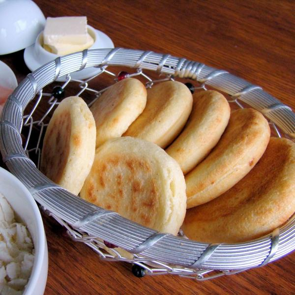

Venezuelan Arepas

This typical venezuelan dish is just perfect for breakfast, you can fill them with avocado, cheese, butter, eggs, tuna or beef. There are too many things you can fill them with.
Besides, it won't take more than 30 minutes!
Ingredients
For three people
- Two cups of pre-cooked white maize meal.
- One teaspoon of salt.
- Warm water.
- One teaspoon of butter (Optional).
Steps
- Wash your hands.
- In a medium bowl add water and salt. Mix until the salt is dissolved.
- Slowly add the pre-cooked white maize meal. Mix with your hands, making circular movements and breaking with your finger the lumps that may form. Let rest 5 minutes to thicken.
- Preheat a non-stick 11-inch square griddle over medium heat. If you don't have a griddle you can use a skillet instead.
- After 5 minutes add the butter to the dough and work it in with your hands for 2 minutes. The dough should be firm enough holds its shape without cracking when molded.
- Divide the dough into three equal portions. Form three balls. Then flatten them gently until they're about 1/2-inch thick discs.
- Place the discs on the preheated griddle and cook the arepas for 5-7 minutes on each side or until lightly golden brown.
- Split each arepa in half and fill them with whatever you like: cheese, ham, egg, beans, chicken, beef, tuna … your creativity is the limit!
- Serve and enjoy!
Extra tips
- It is common to spread butter inside the arepa before filling. Totally optional but highly recommended.
- To make authentic Venezuelan arepas you must use white Harina P.A.N. Many regular grocery stores sell it (international food aisle). You can also find it in Latino markets.
- Once the arepas has cooled, you can store them at room temperature in an airtight container for 2-3 days or store them in the refrigerator for up to 5 days, also in an airtight container.
Back